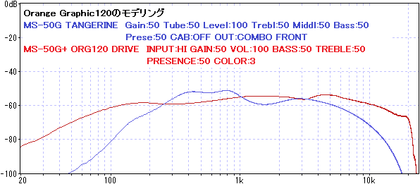

ZOOM MS-50G+ MultiStomp 分解・特性測定
2024年05月11日 カテゴリー：修理・改造・解析
前回のZOOM MS-50Gに引き続き、MS-50G+を分解、特性測定しました。
【分解】
裏フタのネジを4個（2個はゴム足で隠れている）とジャックのナットを外すと、黒い金属枠を取り外すことができます。
灰色の部分は樹脂のような材質ですが、黒い部分は頑丈な金属なので、ジャックの抜き差しで力がかかっても問題ありません。筐体全てが金属ではないため、入力ジャックの周りにノイズ対策のシールドが付いています。
▽基板画像

＜主なIC＞
DSP：TMS320C6745（旧機種MS-50Gと同じ）
DRAM：EM638165TSE-7G
フラッシュメモリ：W25Q64JV
ADC：PCM1803A
DAC：PCM5101A
オペアンプ：NJM2100
ヘッドフォンアンプ：TS482
入力バッファのトランジスタは、旧機種と同じ2SC2412Kです。旧機種で使われていたADCのWM8782は生産終了のため、PCM1803Aへと変更されています。PCM1803Aは内部にオペアンプがないため、NJM2100で別途ゲイン調整してあるようです。出力部にはTS482があるので、充分な音量でヘッドフォン駆動できます（公式記載はなし）。
旧機種と同様、入力音量によってSN比が変化するのが確認できました。切り替わる境目の音量は120mVrmsあたりのようです。
高音域についてはノイズレベルの差があまりありません。ノイズ対策として、プリエンファシス・ディエンファシスが組み込まれている可能性があります。
▽バイパス音 ※±1dBに拡大
（DIRECT：測定に使用しているオーディオインターフェースUR22Cの入出力を直結）
音量が違うためわかりにくいですが、MS-50G+では低音域のカットが改善されています。高音域側が波打つような形になっているのは、おそらくPCM1803Aの内部デジタルフィルタによる影響です。レイテンシは約2msで、旧機種の1.2msから若干増えています。
＜旧機種MS-50Gとの周波数特性比較＞
BOSS DS-1とチューブスクリーマーのモデリングです。
TS DRIVEについてはほぼ一致しています。全てのエフェクトで確認したわけではありませんが、旧機種で後から追加されたエフェクトについては、同じ処理なのではないかと思います。
プリアンプのうち、モデリング元が明記されているHiwatt Custom 100とOrange Graphic 120です。※旧機種のOUT設定をLINEにすると少し低音域・高音域が増強されますが、大きくは変わりません。

両機種共に大きく異なっています。MS-200D+のエフェクトリストのプリアンプには、「アンプ接続に適したサウンドに仕上げました」という説明があります。MS-50G+のプリアンプもアンプのリターン挿しを想定したものではなく、歪みエフェクターとしてアレンジしてあると思われます。
プリアンプはマルチレイヤーIRを採用してあるということで、入力音量による変化を確認しました。-40dBの特性を画像編集で移動し重ねてあります。

MS1959では音量が大きい方が高音域が下がっています。FD TWIN-Rのように変化しない場合もあります。
＜総評＞
2012年発売の旧機種MS-50Gから11年の時を経て発売されたMS-50G+ですが、DSPが同じなので基本的な処理能力は変わっていないと考えられます。よって今までより複雑な処理を行っているわけではなく、処理の効率化・代替等でブラッシュアップを図ってあるようです。もちろん複雑な処理をするほど音質が素晴らしいというわけではありませんが、個人的には進化したというよりアレンジが変わったという印象です。また、アンプのリターン差しやライン・レコーディングに不向きになったので、そのような使い方をしていた人にとっては不便に感じられることでしょう。今後はプリアンプ・IRに特化した機種が発売されるようなので、動向に注目したいと思います。